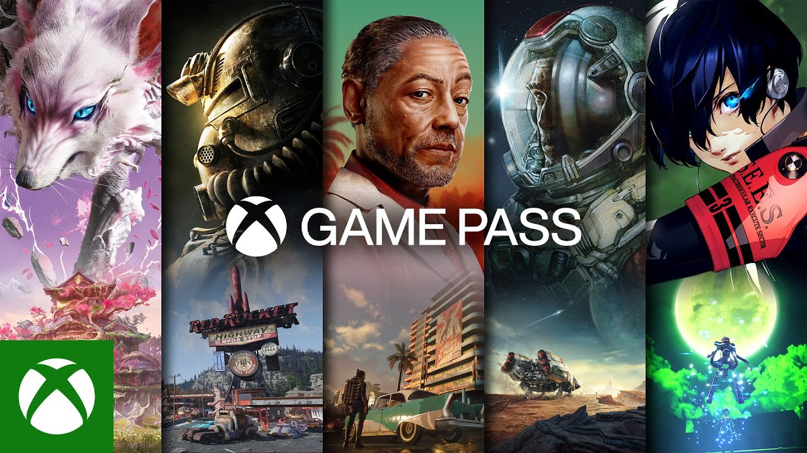

🎮 Xbox Game Pass agrega 10 nuevos juegos
Publicado: 01/05/2026 | Por: Redacción Mundo Gamer
Microsoft ha anunciado la incorporación de 10 nuevos títulos a su servicio Xbox Game Pass para mayo 2026, incluyendo juegos AAA como Starfield 2 y lanzamientos day-one.
Entre los juegos destacados se encuentran: "Fable 4", "Doom Eternal 2", y "Age of Mythology: Retold". Los títulos estarán disponibles para consola, PC y cloud gaming.
La suscripción a Game Pass Ultimate tiene un costo de $14.99 USD mensuales, e incluye EA Play y acceso a xCloud.
← Volver a noticias